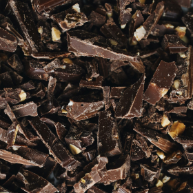
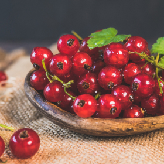
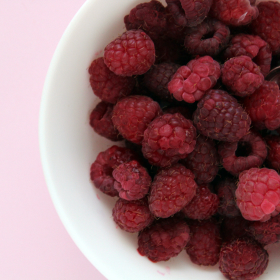
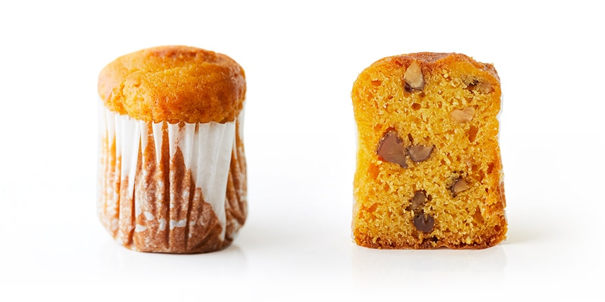
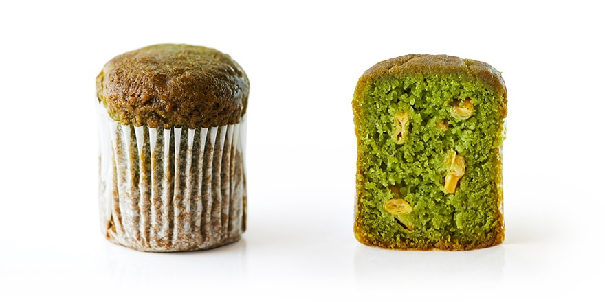
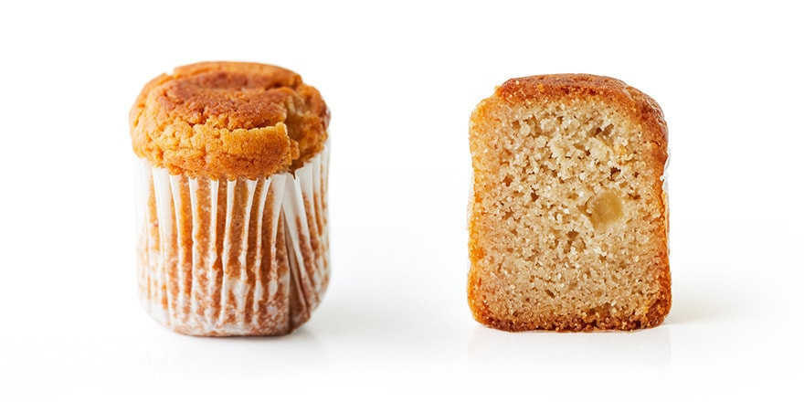

おやさいが モグモグおいしい 魔法のおやつ。
ママの気持ちで
我が子に食べさせたい
おやつを作る。
SLOW MUFFINの
3つのこだわり

- Allergy Free
-
アレルギー
特定7品目不使用アレルギーの有無に関わらず、みんながおいしく食べられるおやつを目指して。SLOW MUFFINは、小児期に多いアレルゲン「乳・卵・小麦・そば・落花生・えび・かに」の特定7品目を使用していません。おやさいの甘みを活かした本当においしいと笑顔になれるマフィンです。

- All Handmade
-
機械を使わず、
製造はすべてハンドメイド追求したのは、我が子に食べさせたいママの手作りおやつ。だから、SLOW MUFFINは製造にもこだわっています。ママの気持ちになって真心込めて、すべてハンドメイドでマフィンを開発。素朴でどこか懐かしい味わいは、お子様はもちろん、ママもおいしく食べられます。

- Natural Taste
-
おやさい好きになる
やさしい甘みがおいしいお子様がSLOW MUFFINを口にすることで、おやさい好きになってくれたらうれしい。それは、ママの願いでもあります。だから、使用するおやさいは甘みのあるものを中心にセレクト。おやさいが持つ自然の甘みでおいしく。おやさいの栄養も摂れるおやつができました。

しっとりとした生地の中に、
やさしい甘みをとじこめた
彩り豊かなおやさいマフィン。
LINE UP
- Yellow
-

黃
- かぼちゃ
- かぼちゃ
モグモグ食べて元気がでますように。そんな想いを込めたビタミンカラーの黄色いSLOW MUFFINです。かぼちゃのほっくりとした甘さとくるみのごろごろとした食感が楽しめます。
原材料＝アーモンドプードル（アーモンド：アメリカ産）、甜菜糖、有機豆乳、かぼちゃ、米粉、くるみ、パーム油、コーンスターチ／膨張剤
- Green
-

綠
- ほうれん草
- とうろこし
ほうれん草の鮮やかな緑色をベースにお子様に人気のとうもろこしを混ぜ込みました。甘さ控えめで、お食事の代わりとしてもおすすめのSLOW MUFFINです。
原材料＝アーモンドプードル（アーモンド：アメリカ産）、甜菜糖、ほうれん草、米粉、とうもろこし、有機豆乳、パーム油、コーンスターチ、食塩／膨張剤
- White
-

白
- りんご
- バナナ
6種類の中で唯一、果実の組み合わせ。バナナを生地に混ぜることで増すしっとり感と、りんごのコンポートのシャリッとした食感が楽しめる白いSLOW MUFFINです。
原材料＝アーモンドプードル（アーモンド：アメリカ産）、糖類、有機豆乳、バナナ、リンゴ、米粉、パーム油、コーンスターチ／膨張剤、酸味料、酸化防止剤、乳酸カルシウム
- Red
-
赤
- 人参
- トマト
滋味あふれる人参の甘みとさわやかなトマトの酸味が特長の赤色のSLOW MUFFINです。人参が嫌いだった子も、これなら美味しく人参の栄養も摂れます。
原材料＝アーモンドプードル（アーモンド：アメリカ産）、甜菜糖、米粉、有機豆乳、トマト、人参、コーンスターチ、パーム油／膨張剤、クエン酸
かわいい我が子の笑顔のために、
ママは心と体を24時間フル稼動しています。
でも、子どもがいちばん嬉しいのって、やっぱりママの笑顔。
だから、ママの気持ちになって、
素材にとことんこだわった愛情いっぱいのおやつを作りました。
SHOPPING

3個セットA
(黄×1、緑×1、白×1)
¥1,350 (税込)
黄(かぼちゃ・くるみ)、緑(ほうれん草・とうもろこし)、白(バナナ・りんご)のマフィン3個セットになります。
-
購入数
3個セットB
(赤×1、茶×1、紫×1)
¥1,350 (税込)
赤（人参・トマト）、紫（紫いも・小豆）、茶（カカオ・さつまいも）のマフィン3個セットになります。
-
購入数
3個セットA
(黄×1、緑×1、白×1)
¥1,350 (税込)
黄（かぼちゃ・くるみ）、緑（ほうれん草・とうもろこし）、白（バナナ・りんご）、赤（人参・トマト）、紫（紫いも・小豆）、茶（カカオ・さつまいも）のマフィン6個セットになります。
-
購入数
9個セットA
(黄×2、緑×2、白×2、赤×1、茶×1、紫×1)
¥4,050 (税込)
黄（かぼちゃ・くるみ）、緑（ほうれん草・とうもろこし）、白（バナナ・りんご）、赤（人参・トマト)、紫(紫いも・小豆)、茶(カカオ・さつまいも)のマフィン9個セットになります。
-
購入数
3個セットA
(黄×1、緑×1、白×1)
¥1,350 (税込)
黄(かぼちゃ・くるみ)、緑(ほうれん草・とうもろこし)、白(バナナ・りんご)のマフィン3個セットになります。
-
購入数
3個セットA
(黄×1、緑×1、白×1)
¥1,350 (税込)
黄(かぼちゃ・くるみ)、緑(ほうれん草・とうもろこし)、白(バナナ・りんご)のマフィン3個セットになります。
-
購入数
FAQ
未開封の場合、冷凍庫（-18度以下）での保存で製造より3ヶ月です。解凍後は直射日光の当たらない常温で保存し、お早めにお召し上がりください。一度解凍した製品を再び凍らせると品質が変わることがありますのでご注意ください。
未開封の場合、冷凍庫（-18度以下）での保存で製造より3ヶ月です。解凍後は直射日光の当たらない常温で保存し、お早めにお召し上がりください。一度解凍した製品を再び凍らせると品質が変わることがありますのでご注意ください。
未開封の場合、冷凍庫（-18度以下）での保存で製造より3ヶ月です。解凍後は直射日光の当たらない常温で保存し、お早めにお召し上がりください。一度解凍した製品を再び凍らせると品質が変わることがありますのでご注意ください。